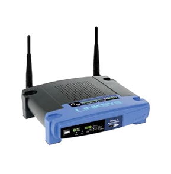

Wireless network refers to any type of computer network that is not connected by cables of any kind. It is a method by which homes, telecommunications networks and enterprise (business) installations avoid the costly process of introducing cables into a building, or as a connection between various equipment locations. Wireless telecommunications networks are generally implemented and administered using a transmission system called radio waves. This implementation takes place at the physical level (layer) of the OSI model network structure.

Wireless telecommunications is the transfer of information between two or more points that are not physically connected. Distances can be short, such as a few metres for television remote control, or as far as thousands or even millions of kilometres for deep-space radio communications. It encompasses various types of fixed, mobile, and portable two-way radios, cellular telephones, personal digital assistants (PDAs), and wireless networking. Other examples of wireless technology include GPS units, Garage door openers or garage doors, wireless computer mice, keyboards and Headset (audio), headphones, radio receivers, satellite television, broadcast television and cordless telephones.
Wireless networks use radio, microwaves and infrared light as transmission media, with wireless technology you can connect cell phones, PDAs or Personal digital assistants, laptops etc together, but the disadvantage of a wireless network is it's a much greater security risk, wireless technologies are implemented at the data link and physical layers of the OSI model, wireless networks work on the IEEE 802.11standard.There are three types of wireless topologies Ad-Hoc which uses a peer to peer connection, Infrastructure where all the devices connect via an access point, and a Bridge topology which connects two wireless or wired networks together. Wireless devices use one of three transmission methods DSSS or Direct sequence spread spectrum used in the 802.11b wireless radios, FHSS or Frequency hopping spread spectrum these transmissions jump between several frequencies at a pre-determined rate or interval and OFDM or Orthogonal frequency division multiplexing used by 802.11a and 802.11g networks this transmits data using multiple carrier waves, each wave carries part of the message, DSSS and FHSS can penetrate walls and are less prone to interference and can transmit data over greater distances, OFDM offers a higher data rate over a smaller bandwidth, with resistance to interference with more non-overlapping channels.
Direct sequence spread spectrum
Frequency hopping spread spectrum
Orthogonal frequency division multiplexing
Wireless hardware can include PCMCIA cards, Express cards, PC cards, USB or internal PCI cards and mini-PCI cards for laptops, wireless access points, cell phones, and PDAs, you can expand the computers functionality by inserting a wireless network interface card into a PC, modern laptops now come with wireless functionality already built in but there may be legacy devices that would need to use network cards like compact flash cards, PCMCIA cards or external USB devices to give the laptop wireless capability, Windows 2000 does not have wireless support built in but Windows XP has built in wireless support known as Windows wireless zero configuration, Wireless on Linux machines can be problematic a utility called NDISwrapper can be used but doesn't always work, and MACs use AirPort Extreme wireless cards with their computers to add built in wireless capabilities, network cards are built around chipsets, the older cards use Hermes or Prism2 chipsets and modern cards use Broadcom or Cisco chipsets among a few other well known brands.
Antennas are also an important feature in wireless networks utilising many different shapes, sizes and characteristics, the Omni-directional dipole antenna is used with most common wireless access points which resembles a doughnut shaped sphere of signal transmission covering 360 degrees, there are also semi-directional antennas used to direct the signal to specific areas for precise coverage examples of these include the patch, panel and yagi antennas, antennas can work by line of site both visual and with RF radio frequency, the Fresnel zone is a elliptical zone that should be free of RF obstructions and interference, Effected isotropic radiated power EIRP is a measure of transmitted radio signal power as it leaves the antenna, antennas suffer from interference from electrical devices, weather, attenuation is where the signal weakens over distance, multi-path signals is where reflection and refraction can cause problems, to increase coverage of the network boosters and extenders can be used to amplify the signal enabling you to receive, amplify and retransmit the wireless signal increasing the range of the network.
The wireless access point is used to receive signals to forward on to other devices on the network, hubs, switches, computers, printers etc. Wireless access points are a key piece of hardware that make wireless networks feasible, they can provide basic to advanced connection functions, routing and security they can be as simple as hubs or as complicated as routers, firewalls, switches and bridges that employ security, authentication, encryption and proxying functions, they are interoperable with multiple wireless standards, usually easily configured through a web interface and can provide both wired and wireless access, a lot of modern access points are multifunctional utilising routers, switches and bridges in one device as well as firewall and proxy functionality, their capable of NAT Network address translation which translates IP addresses into MAC addresses, configuring IP addresses to block or allow traffic, to block ports and protocols.
Wireless security issues have additional problems to that of a wired network because they are not enclosed or contained they are physically open because they utilise the airwaves, radio frequencies making it possible to circumvent security devices, firewalls, routers etc, with radio transmission security becomes more important, you need to use encryption and access control, authentication, authorisation and accounting also play an important role in keeping the network secure.
You can Manual configure from a web interface, one of the first things to do in configuring the router would be to change the SSID or Service set identifier, it uses a default name and this needs to be changed to a name that is not easily figured out by anyone looking to hack into the network, it's best to disable the broadcast of the SSID as well as a precautionary measure, you may need to adjust the mode settings if the computers on the network are different wireless standards from one another, such as 802.11b, 802.11g and 802.11n etc, also the channel frequency may also need to be adjusted if there are other networks nearby creating transmission interference, the security mode should be setup for the best available encryption for the network.
If you can only use WEP encryption it's better than having none at all but if your network can use WPA or WPA2 encryption then that's what should be enabled, MAC address filtering should be utilised for additional security measures, you can configure the access point so that only the MAC addresses that are authorised by you can only access the network, the firewall should be enabled, with access restrictions you can block URLs to certain computers on the network you can also block certain protocols, you should enable a strong password for the router.
Linux access points usually offer more choices and flexibility, customising the kernel and operating system options, low end hardware can be utilised but requires advanced Linux and networking knowledge, Linux offers a high level of security and must be configured in ESS or Extended service set mode, any Linux distribution can be used but needs to be a minimum 2.6 kernel.
Computers can be configured manually or automatically, most operating systems are similar in the way they are configured, you need the SSID, the WEP or WPA key and the wireless configuration preferences, configuration between Windows versions, Windows 2000 does not support wireless you need to use a third party utility, Windows XP supports wireless WEP, Windows XP SP2 supports WPA and WPA2, Windows server 2003 and Vista support wireless zero configuration, if you click on the wireless icon in the task bar this will open wireless network connections properties and then you can configure the network settings, in Windows Vista click on start - control panel - network and sharing center - manage wireless networks and add a wireless network. Wireless configuration is generally similar with Linux distributions you can use both the command line or the graphical users interface, and Linux supports WPA and WPA2 encryption, not all wireless cards have Linux drivers you can use NDISwrapper for some cards which uses drivers intended for Windows, it's always best to search the vendors web site for Linux driver support, you still use the same information as with other clients, in Ubuntu select system - administration - network and network settings and configure the network, you can also use the terminal command line type in iwconfig -h. MACs exclusively use AirPort cards with full support for WPA2 encryption.
Almost all configuration settings can cause connectivity problems with wireless access points, most common problems are easy to troubleshoot, working to a troubleshooting procedure and documenting changes are important, it could be incorrect SSID, incorrect encryption settings, wrong key, incorrect DHCP address range, MAC filtering turned on but the computers MAC address as not been inputted, wrong channel settings, range, electrical interference, once you have a working configuration back it up and document it.
Wireless applications have become more prevalent with the need to interface with a wide range of devices, different operating systems, wireless technologies, some devices like laptops and PCs can utilise existing wireless applications and technologies, others such as PDAs, Cell phones etc require a different application programming to fit their needs, e-mail, web browsers, entertainment, music and video etc, some of the wireless devices use micro-browsers to view special versions of websites specifically designed for smaller wireless devices, utilising web enabled applications written in WML or Wireless mark-up language instead of HTML. WML is a programming language based on XML which formats content for wireless devices, WML pages are stored on a web server and the client's access the pages using the wireless application protocol or WAP, the pages are accessed through a WAP gateway, WML pages use scripting similar to JavaScript usually stored in a separate file, the pages provide the same functionality as normal HTML pages that are translated by the WAP gateway this technology may become unnecessary in the future as more mobile devices are being built to support XML and HTML.
WAP or wireless application protocol is an open standards protocol used to enable wireless devices to access the internet and the World Wide Web it's the primary protocol for most of the world's wireless-enabled internet sites, it uses multiple layers similar to the OSI and TCP/IP models, responsible for connection, security and application services, it's compatible with most operating systems and hardware, WAP1X the first version is still in use, it as a set of protocols that reside at the top four levels of the OSI model, the stack includes the wireless application environment, wireless transaction protocol, wireless session protocol, wireless transport layer security protocol and the wireless datagram protocol, this is being replaced by WAP2.0 which seeks to bring in line with standard protocols, most popular websites provide wireless content for mobile users news, e-mail, websites like Yahoo, MSN, CNN etc provide alterative sites optimised for mobile phones and PDAs, newsfeeds can be sent directly to wireless devices.
WEP or Wired equivalent privacy encryption introduced in the 802.11b wireless standard was the first major security protocol giving the option of a 64 bit or 128 bit key but with the 24 bit IV or initialisation vector which reduces the key size down to 40 bit and 104 bits, WEP provides encrypted data and enables client authentication, it uses a shared key and a challenge and response mechanism to authenticate the clients and access points, it was discovered to be vulnerable, the IV was sent in clear text, using RC4 encryption algorithm and using sniffers and tools like Airocrack it's easy to capture the packets and can be easily cracked by hackers.
WPA or Wi-Fi protected access developed by the Wi-Fi alliance to overcome the vulnerabilities of WEP, the first version took into account older hardware while the 802.11i security standard was being ratified, version one incorporated TKIP or Temporal key integrity protocol which changes keys at a high rate of speed, the 802.11i standard released in 2004 became known as WPA2 and included the AES-CCMP or Advanced encryption standard as encryption algorithm, in counter mode, with cipher block chaining (CBC) message authentication code (MAC) protocol.
Temporal key integrity protocol
802.1X is a port based network access protocol which has several protocols including EAP or Extensible authentication protocol which provides multiple user-based authentication using smart cards, Kerberos, PKI or Public key infrastructure etc, EAP-TLS Transport layer security provides strong security but requires the use of a client and server certificates to perform authentication, dynamically user and session based keys are distributed to secure the connection, EAP-TTLS or Tunnelling transport layer security also provides mutual authentication of the client and server uses TLS records to tunnel for client authentication, PEAP or Protected extensible authentication protocol similar to EAP-TTLS, LEAP or Lightweight extensible authentication protocol used in older Cisco WLAN protocols, EAP-MD5 provides only minimal authentication capability it duplicates CHAP password protection not recommended because of security vulnerabilities.
SSID or Service set identifier broadcasts the name of the network you should always be change from the default SSID, you should also disable the broadcast of the SSID, this is a deterrent to casual hackers but can be easily discovered by more advanced hacker tools, the SSID is stored in Windows 2000 and XP, the SSID can be leaked on boot-up if Windows cannot access the network it's queried through broadcast. The MAC address is the hardware address of the client computer, these can be filtered in the access point configurations to prevent or enable a client to access the network, but MAC addresses can easily be sniffed and spoofed by software used by hackers so filtering MAC addresses as only limiting effectiveness.
War driving refers to searching for unsecure wireless access points and war chalking is the practice of identifying the access points by marking buildings nearby so that other war drivers know that there's an access point that can provide you with free internet access from your laptop or PDA, the symbols that are chalked on the nearby buildings usually indicate the type, speed, bandwidth, the SSID and security of the unsecure access point, wireless security testing or penetration testing involves penetrating your own wireless network to determine the vulnerabilities and deficiencies of your network in order to fix them.
A good methodology provides a structure to testing procedures, and ensures that you don't overlook vulnerabilities and weaknesses in the wireless network, it provides for comprehensive testing, preparation of the type of tests involved, getting permission, preparing the tools to be used in the tests, reconnaissance providing valuable information about the target network, vulnerability testing of access points and devices, scanning the network for weaknesses, penetration and access of the network, using the resources, and gaining information from the network that can be exploited.
Some popular methodologies include NIST SP 800-42, TRAWG, and OCTAVE, there's a wide variety of testing platforms available anything with a wireless card and software can be used, PDAs, Cell phones, Laptops, PCs, a variety of operating systems like Windows, Linux or MACs can be used, penetration testing tools for the Windows platform include, NetStumbler which can discover SSIDs, what encryption is in use WEP or WPA, Nessus is a vulnerability scanner and Nmap is a port scanner, the Linux platform include Kismet, Ethereal/Wireshark is a good sniffing tool, there are also some Linux special security distributions, Backtrack, NST, War Linux which have some useful tools installed on them.
To prevent others from accessing your network or stealing your data, you might have hackers trying to create denial of service preventing legitimate users from access to the network, you might have access points that have been setup to connect to yours to get your wireless clients to associate with them, use wireless security tools to detect unauthorised devices, look for unusual SSIDs, Ad-Hoc mode clients, access points that are not authorised for your network that don't belong there, compare a list of authorised MAC addresses to the MAC addresses that are being used on the network, look for different hardware types than the ones that you use, look for excessive traffic from a client or access point that may indicate an attempt to obtain a DHCP address or trying to get an access point to repeat it's initialisation vector, or find the SSID or MAC addresses that are used on the network, so it can later spoof those addresses, use automated wireless intrusion detection devices/software to detect unauthorised clients, create a strict policy for connecting to the network and internet use.
Site survey and design are critical elements when administering a WLAN, gather the information prior to installing the equipment, because once the network is implemented it's too late to change the design, you need to get it right the first time.
Integration with other security protocols, smart cards, key fobs etc, you will need to look at the equipment requirements, the number of client computers, access points.
You need to look at the site itself the physical layout.
The placement of access points, antennas and other equipment, any restrictions by law where you may need permits etc, what safety measures should be enforced, you need to document all these requirements and considerations in planning the design of the network, the MAC addresses of the equipment and the make, model and serial numbers etc.
Home networks there is usually one access point and between two to six computers or laptops a Cable or DSL modem, it could be that there is different hardware involved making configuration a little harder than that of a business that uses all the same brands, security is of upmost importance as most home wireless network access points use default settings to make it easier to setup for the user, home networks can be Ad-Hoc or Infrastructure, Ad-Hoc or computer to computer or Independent basic service set, usually setup for quick temporary connections, Infrastructure mode or basic service set where an access point connects a number of wireless devices to a network, some things that should be done is change the default SSID name and disable the broadcast, enable encryption WEP or WPA/WPA2, enable MAC address filtering, use DHCP, change the frequency channel if there are other networks nearby causing interference to the signal, place the access point in an high location, position away from cordless phones or other devices that may cause electrical interference, use the firewall to limit access, change the default password, find out what ports will be utilised to allow or deign access.
Small SOHO and medium sized networks present more of a challenge than home networks although the same principles are involved, they are usually configured in one of two ways Basic service set or Extended service set (using multiple access points) these networks require planning and design, with small businesses there may be limited resources, there may be no network administrator, you will need to document design and record configuration details, IP addresses, passwords, encryption keys and turn them over to the office manager, you may need to train personnel in basic troubleshooting procedures, change the default SSID name and disable the broadcast, enable encryption WEP or WPA/WPA2, enable MAC address filtering, use a defined DHCP range, change the frequency channel if there are other networks nearby which are causing interference to the signal, enable inbound filtering of dangerous protocols telnet, remote desktop, ftp etc, if a security policy exists configure the access point to support it, use reserved addresses for servers and networked printers, always have a RJ 45 connection to the access point for maintenance, try to put the access points in secure areas, find out the level of support offered by the internet service provider, you might need to enable remote administration for a small business.
Enterprise networks require a more defined and rigorous effort in administration, documentation is a necessity, equipment and software standardisation, may require dedicated administrators for the wireless network alone, there is usually defined areas of administration, users support, help desk, backup, redundancy, security, maintenance, planning and integration is constant in an enterprise network, maintain a full equipment list, document every aspect of the network, set defined security policies and procedures, maintain inventory and audit trials, plan for growth in advance, be familiar with applicable compliance regulations and policies (SOX, FCC, Electronics communications privacy act, HIPAA) if they apply to your enterprise, be familiar with any standards IEEE, Wi-Fi, NIST, DoD that apply to your work, you should be prepared to support a wide variety of users and technologies, become a technical expert and be pro-active in securing and managing the network.
Customer requirements, bandwidth, number of uses, applications and uses, security requirements, what is the budget?, get existing network documents blueprints, surveys, area maps, security policies, business documentation, perform a comprehensive site survey, do a wireless scan of the area and record any existing networks in the area, physically inspect the site and surrounding area, get electrical diagrams, record the physical characteristics of the site, the farthest distance from one point of the site to another, to check what range is needed, balance requirements to the outlay of the network, try to stick to a single vendor improves standardisation and interoperability, co-ordinate with personnel, test equipment and connections, correct problems as they occur then re-test, train personnel as necessary on design, configuration, administration and troubleshooting, document everything.
Administering wireless clients can be important and challenging, use standardised hardware that fits the needs of the business, try to use hardware from the same manufacturer whenever possible, centrally maintain a driver library CDs, use standardised configuration on clients whenever possible, set permissions and rights to prevent users from changing configuration, ensure that the strongest security used is compatible with client hardware and operating systems, record hardware addresses and inventory of client devices and maintain the information, ensure the client computers are patched with the latest security updates from the vendor, train users, ensure users are aware of security and company use policies, test each computer for correct operation prior to handing it over to the user.
Configure wireless access points for optimum connectivity and security, use standardise configurations, use devices from the same manufacturers whenever possible to ensure standardisation and interoperability, document standard configuration options, test applications and access points and their configuration settings, backup configuration files per device, ensure the highest level of supported encryption is used should be compatible to all equipment, ensure the correct time and date is set, change the access points SSID and password, use the device name in accordance with standard host/device naming convention, configure network address translation or NAT for client computers, configure DHCP and DNS options correctly, use filtering options in conjunction to other security devices to support the security policy, place access points in secure areas, check the distance between access points and client computers, use care when connecting wireless networks to corporate wired networks, ensure proper safeguards are built in to the separate devices, users, applications and protocols, limit the traffic between networks to only what is necessary to maintain business needs.
Document and get authorisation for all connections to a wired network, use single point of entry where possible, use a firewall between the wireless and wired network in addition to any other perimeter security devices, it may be better to use separate authentication for the wired and wireless networks, put servers and any other mission critical resources on the wired network, if wired networks are bridged using wireless bridges, ensure all traffic is encrypted using both wireless bridges and encryption methods on the wired network, require authentication for traffic that is bridged this prevents session hijacking, man in the middle attacks and spoofing, ensure proper permissions are implemented on network shares and resources, consider using VPN or virtual private networks to establish connection between a wired network and wireless clients, setting up an encrypted tunnel which provides encryption and authentication, use switches to limit collision domains from incoming wireless network traffic, maintain all the connection documentation on wired to wireless connection points, use different IP subnets for wired and wireless traffic.
Design and install the wireless network with security in mind from the ground up, configure every link in the chain securely clients, access point and any other infrastructure devices, use the strongest encryption method that the network infrastructure can support, develop the security policies to define what is and what is not allowed on the network, make an inventory of the devices allowed on the network and list the MAC addresses, limit the access point administration to just a few knowledgeable administrators, change the SSID to something obscure and don't broadcast the SSID, set up MAC address filtering to allow only authorised hardware addresses from approved devices and periodically check that no new addresses are on the network, use built in firewall and proxy features in conjunction with other security devices, use NAT and private IP addresses, use a different DHCP scope, change the routers default password, use 802.1X authentication where possible, use additional measures IPSec, SSH from the clients and servers where necessary, require additional authentication methods like smart cards, domain authentication to networked resources, only allow certain protocols to pass, update the firmware periodically to ensure the latest security fixes are applied.
A wireless print server is usually an access point with USB ports that can connect printers, the printer can also be connected using an Ethernet port, sharing and printing can be configured on the access point or print server via a web-based interface, wireless media centers are also used to share music and video on a network used mainly in homes or internet cafes it can stream audio or video to devices from a media library or the internet, these devices can connect directly to the computer or they can be connected to TVs, Stereos or DVRs some can have internal storage to store MP3s and video, wireless presentation gateways can be used to connect to overhead projectors used in the business environment, other devices can include IP phones, wireless video surveillance cameras, wireless boosters or extenders, gaming devices such as the Microsoft Xbox, Nintendo Wii, Sony play station 3, PDAs, Laptops, Tablet PCs, wireless bridges, wireless switches and controllers, point of sale and inventory systems, barcode readers used in factories and supermarkets, keyboards and mice, storage systems, hotels using hotspot gateways.
Bluetooth was developed as a protocol for use in wireless personal area networks, released as the IEEE 802.15 WPAN standard, devices communicate in Ad-Hoc networks called Piconets, Bluetooth uses FHSS or Frequency hopping spread spectrum modulation using the 2.4 GHz frequency range and changes frequency at 1600 hops per second between 79 different frequencies, it uses very low power and a low range.
| Device class | Signal strength | Range |
| Class 1 | 100 mW | 100 meters |
| Class 2 | 2.5 mW | 10 meters |
| Class 3 | 1 mW | 1 meter |
The Bluetooth special interest group is a group of manufacturers dedicated to ensuring interoperability and adherence to standards, Bluetooth enabled devices include PDAs, Cell phones, Laptops, Tablet PCs, Headphones and Transmitters, Bluetooth uses a unique device address to authenticate devices, provides authentication at the data link layer of the OSI model, the key length is selectable between 8 - 128 bits encryption algorithms, the key size is usually hard coded at the factory, devices can be secured and set to undiscoverable by other devices, Bluetooth devices pair with each other via a shared pin enabling devices to trust each other, encryption can be required before connection is allowed between devices, Bluetooth as many security weaknesses there's no process for managing issue validation or revoking link keys and shortcomings in encryption and authentication protocols, weak key strength, repartition of initialisation vectors, there are vulnerabilities in the protocol stack, encryption and authentication can be overcome and is not required for communication between devices, broadcast traffic is not encrypted by default, service discovery can be discovered on another device by default and it's easy to sniff and spoof Bluetooth traffic.
Infrared technologies are used with small personal electronic devices, they are used to transmit small amounts of information between devices, both devices are required to have infrared ports and depend on line of sight to communicate with each other, you can do small file sharing and limited peripheral sharing, data rates average 115.2 Kbps, devices referred to as a primary initiates the connection and a secondary device replies, computers and PDAs are normally primary devices and devices like printers are secondary devices, infrared is used with PDA synchronisation to computer, phone books, calendars, e-mail, mobile phones, also used with point of sale, barcode scanners and inventory equipment.
Cell phones use several technologies to connect to a cell network, analogue technologies are not widely used any more they are not secure, unreliable, digital technologies have now become standard Cell phones are usually classified in one of three categories 1G the first generation technologies, out dated and not used anymore had limited data capabilities, 2G the second generation is still widely used, divided into TDMA or Time division multiple access and CDMA Code division multiple access categories, common 2G technologies iDen and GSM the services are commonly called PCS services, 3G or third generation, high data rates with the ability to transfer voice and data simultaneously, popular in multimedia-enabled Cell phones.
PDAs and smart phones are in widespread use, the devices can connect to wireless networks for e-mail, news, using web browsers, with a variety of technologies Bluetooth, Infrared, 802.11 protocols, PDA devices have Mini PC or SDIO devices built into them, Cell phones can use Cellular technologies many of the vendors such as Sprint, Cingular, Verizon have their own broadband services, PDAs have mini operating systems that support wireless connections with e-mail clients, web browsers, the newer PDAs have built in support for the WiMAX standards for wide area broadband.
Radio frequency ID used to track inventory and control equipment, small tags are attached to items and a signal is sent to a central receiver, it as a limited range, there are two types of systems used Active and Passive, Active systems have an internal battery, and transmit stored information when queried by the reader, their range can be from a few inches to a few hundred feet, Passive systems have no internal power, they receive transmitted signals from a central station and use those signals as power to transmit the signal back to the central station, there is a limited range around 12 feet, some systems require a pass-code for authentication, this information is not encrypted so can easily be sniffed, and it's easy to spoof transmitted data with RFID and it can then be retransmitted.
Zigbee is a wireless technology designed for industrial purposes for automation control, and for monitoring systems, it uses the 802.15.4 standard and uses DSSS or Direct sequence spread spectrum, the Zigbee alliance is a group of manufactures dedicated to ensuring interoperability and adherence to standards for Zigbee devices, devices can be networked in a WPAN architecture and contain up to 65,536 nodes, it's not interoperable with Bluetooth or 802.11 standards, it can be used in a home automated system light switches, alarm timers etc, devices are low power and can run on AA or AAA batteries.
The Institute of electrical and electronic engineers IEEE 802.11 wireless standards, the original 802.11 standards were released in 1997 and operated at 2.4 GHz and offered data transfer rates of 1 - 2 Mbps this standard used DSSS or Direct sequence spread spectrum and FHSS or Frequency hopping spread spectrum signalling, this was replaced by the 802.11a standard in 1999 this used the 5.0 GHz frequency and had data transfer rates of up to 54 Mbps and used OFDM or Orthogonal frequency division multiplexing signalling, and because of the frequency range was resistant to interference from cell phones, microwaves etc, it had a range of 30 - 50 meters.
The Institute of electrical and electronic engineers
Around the same time the 802.11b standard was released this was not compatible with 802.11a, data transfer rates of 11 Mbps and it used the 2.4 GHz frequency, it was approved by the Wi-Fi alliance and introduced WEP or Wired equivalent privacy encryption, this standard used DSSS or Direct sequence spread spectrum signalling and offers a range of up to 100 meters, the 802.11g standard released in 2003 was interoperable with 802.11b, and operates in the 2.4 GHz frequency range with data transfer speeds of up to 54 Mbps with a range of up to 50 meters, and uses OFDM or Orthogonal frequency division multiplexing signalling, it is subject to interference from cell phones, microwaves etc because of the frequency range, the latest standard 802.11n it is interoperable with the 802.11b and 802.11g standards and should operate in both the 2.4 and 5.0 GHz frequency with data transfer speeds between 200 - 600 Mbps and a range of 50 - 600 meters.
The 802.11i security standard introduced in 2004 specifies security standards for wireless networks implemented by WPA2 or Wi-Fi protected access 2 a replacement for the WEP encryption and further improvements on WPA encryption standard which was introduced to solve weaknesses in WEP encryption, the WEP encryption standard which is known to be vulnerable to attack from hackers with weaknesses of a small IV or initialisation vector (24 bits), repetition of keys, weak encryption algorithm (RC4), WPA2 has AES block cipher used to encrypt keys and a (48 bit) IV or initialisation vector, it can also use 802.1X for authentication and key distribution, 802.11i is supported by most operating systems Windows XP SP2, Vista, Linux and some Macintosh computers, some equipment might need firmware updates to support WPA2.
Some other 802.11 standards for wireless implementations include 802.11e addresses QOS or Quality of service which deals with VOIP voice over IP and media streaming, 802.11f addresses roaming and multi vendor interoperability making sure devices by different manufacturers work together, 802.11h European use of the 5.0 GHz bandwidth, 802.15.1 Bluetooth standard, Wireless access protocol version 1 and version 2 which standardises web sites for use with mobile devices, 802.1X cover port-based authentication and encryption for wireless devices and networks.
Wireless signals travel as energy usually in waves, the frequency is the number of waves in a given time period usually measured in Hertz cycles per second, common measurements are MHz and GHz and common frequencies are 2.4 and 5.0 GHz, amplitude the height of the each wave gain/loss is the increase/decrease of amplitude measured in decibels, wireless networking operates in the SHF or super high frequency range of 3 - 30 GHz, waves have certain characteristics, reflection happens when a radio wave bounces off an object, refraction is when the radio wave passes through an object but leaves at a different angle, diffraction is when a radio wave passes around an object, scattering is when a radio wave breaks up in to multiple signals out of phase with the original signal, amplification is when the signal is boosted, attenuation reduces signal activity, a multi-path signal is when the radio wave is reflected or refracted and has broken up and out of phase from the original signal, radio frequency interference can be electrical noise or interference from weather or other devices.
The Institute of electrical and electronic engineers
RF power is expressed in Watts
1 Watt (W) = 1 amp of current at 1 Volt, basic RF power measurements can be from milliwatts (mW) to thousands of Watts, wireless technologies are usually expressed in milliwatts (mW) Gain: is increased amplitude resulting from increasing power by optimal antenna use. Loss is a decrease in amplitude by decreasing power these are measured in decibels (dB) based on absolute power, decibels correlate to Watts uses factors of 3 and 10 to convert
1 mW = 0 dB, 10 mW = 10 dB, 1 W = 30 dB
dBm decibels with reference to milliwatts the relationship between decibels and Watts is logarithmic the formula is P (dBm) = 10* (log(P(mw))) a shortcut method uses 3 and 10 to calculate.
The range of a RF signal depends on several factors, power, frequency and interference with an increase in power there's an increase in range a decrease in power a decrease in range, frequency effects range the higher the frequency the shorter the waves and the lower the frequency the longer the waves and under the same amount of power lower frequencies travel father 802.11b/g have a greater range than 802.11a, interference can limit range, electrical noise, weather other transmission can limit the range to combat interference you can use RF shielding, more power, move devices that are creating interference. The speeds of wireless networks are measured in bits per second, with older modems connections where measured in Kbps (14.4, 36.6 and 54 Kbps) and modern LAN speeds are 10/100 and 1000 Mbps (Gigabit Ethernet)
The router connects to the internet via a cable or DSL modem giving internet access to all the computers on the network, you can also enable file and printer sharing for all the computers throughout the network. Care should be taken in selecting the best place to set up the modem and router, normally a central position to give the best signal coverage for the wireless throughout the building where the network is going to be set up. After selecting the best place to set up the modem and router you need to connect them to each other, you will also need to reset the appliances in order for them to communicate with each other correctly.
You may need to install wireless network cards to the computers on the network that don't already have wireless functionality this can be done by inserting PCI or PCIe network cards or external USB connectors for desktop computers, with laptop computers if the wireless functionality is not already built into the computer you can use PC card, Cardbus or Express cards inserted in to a external expansion slot. Remember to install the drivers for any of the network cards first before installing the cards into the computer this enables the computer to recognise the new hardware and assists in making the correct configurations, it's usually best to read the manual that comes with the device to check for the correct installation procedure and it's recommended that you check the manufacturers web site for any driver updates and make sure you've made a backup of the existing drivers before installing the upgrade.
After connecting the router to the modem you need to configure the router this requires you to open internet explorer or whatever network browser you use and typing in the routers IP address this is usually 192.168.0.1 or 192.168.1.1 and you should arrive at the routers login screen, the user name and password are usually admin by default which you will need to change for security reasons, there will be various screens and different tabs to give you access to the various configurations that need to be made to the router depending on the make and model but the basic setup procedure should be similar on all makes of routers.
The SSID Service set identification is the name of the wireless network, the wireless router will have a default name and will be enabled to broadcast the name for security purposes it's best to change the name of the SSID and to disable it from broadcasting the name, you should also use MAC filtering which allows only specific MAC addresses to connect to the network. Check the mode setting this will be governed by the network cards on the computers that are going to be networked; a modern network would most likely be the IEEE 802.11g or 802.11n standards. You will also need to set the channel these are numbered from 1 to 14 and most routers are normally set to channel 1, 6 and 11 because these frequencies don't overlap but on most modern routers this is auto-configured to scan for other network channels that are broadcasting nearby.
If your equipment can only use WEP encryption you will need to set the security mode WEP (Wired equivalent privacy), this uses 40 bit and 104 bit encryption but uses a static shared key this is now regarded has low security and easy break into so it's recommended not to use it, modern wireless networks should be set to WPA personal or WPA2 (Wi-Fi protected access),encryption improving wireless security this is also known as PSK or PSK2 in some routers, there is also a setting for the cipher type TKIP (Temporal key integrity protocol) or AES (Advanced encryption standard), AES being more secure but this would depend on whether the wireless card supports this,
There is a setting to set a pre-shared key this can use 8 - 63 ASCII characters and it is definitely worth using the full 63 random characters to be secure, this can be done by typing upper and lower case letters, numbers into a word program such as notepad etc and copying and pasting the key into all the other computers on the network this word file can be put on a USB flash drive to achieve this, on most good routers there is a feature that updates the key which basically scrambles this key every few seconds making it impossible for hackers using sniffing tools to break the password.
Make sure the time and date settings are setup correctly this will help when you setup any access restrictions this is normally done by a wizard that guides you through the steps and you can then set up a access policy putting internet restrictions on any of the computers on the network. You might need to input the computers Mac address you can find this from the command prompt by selecting start - run and type in cmd and pressing enter this should open the command prompt where you need to type in the command ipconfig /all and press enter and if you look in the list you should see a group of hexadecimal numbers and letters corresponding with the physical address this is the computers Mac address.
To setup the wireless network in Windows you will need to access network connections this can be accessed by either right clicking on the wireless connection icon in the system tray or from the start menu by either selecting network connections or from the control panel and selecting the network and sharing centre icon and selecting the manage network connections, then select the icon for the wireless network and right click on the icon and select properties then highlight internet protocol version 4 or Internet protocol TCP/IP and select properties and make sure the obtain IP address automatically as well as the obtain DNS server address automatically boxes are ticked, The DHCP server should then assign these addresses automatically.
To setup file and printer sharing you first need to disable the software firewalls on the computers you going to use on the network, this will be enabled again after the network as been configured you have the protection of a hardware firewall that's built into the router so you should still have protection. Right click on my computer and select properties to change the name of the computer and the select the membership to workgroup, first is file and folder sharing to check that everything is setup and running correctly right click on a file or folder you wish to share and select sharing and security and follow the wizard to share the file or folder over the network once this is successful you have a good idea you network is working properly.
The next task is to make sure your printer is connected and working properly select start printers and faxes select the printer you wish to network right click on it and select share, you need to check that there are no protocols other than the network protocol added to the printer and file sharing as this can prevent the printer from working properly, this can be changed in network connections under the advanced menu and then advanced settings.
Troubleshooting wireless networks interference can be a problem using wireless, microwave ovens, fluorescent lights, cordless telephones, high power sources can all course interference with the signal, there are some commands that can be used netstat /e in Windows and netstat i in Linux, all of the devices on your network should be using the same encryption TKIP (Temporal key integrity protocol) or AES (Advanced encryption standard) WPA2 uses a pre-shared key (PSK) for authentication.